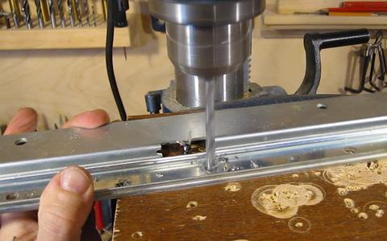
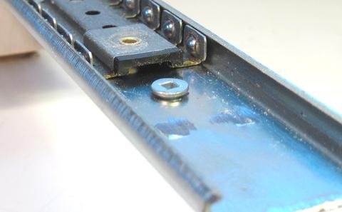

Using drawer slides as linear glides
This page is about turning double tiered style full extension drawer slides into linear glides for homemade woodworking machines.{kind=link}
It's a bit of work making the slides suitable for something like a wooden mortising machine but industrial linear ball glides start at prices in the hundreds of dollars each, so it's well worth the trouble.
Telescoping full extension
drawer glides are becoming more popular today, but I have found that
these have too much play. They need to have play in them so as to avoid jamming up
if the drawers and their enclosures have a slight bit of mismatch to them.
The balls between the innermost and middle layer of telescopic glides tend to have less play,
but the middle layer would be difficult to mount, so they aren't as suitable as the
older double tiered style slides. Lee Valley still sells
these. Another alternative is to use keyboard drawer slides, or center drawer
slides (Lowes sells these). Most slides, other than the popular telescoping full extension
variety can be adapted.
Check the material thickness of your slides. The good ones are made of sheet metal that is at least one millimeter thick. If it's less than a millimeter thick, don't use them.
{kind=link}
An 'S' profile bracket is spot welded onto the upper and lower rails to connect them together.
The arrow in the photo at left points to the spot weld. It really doesn't show up very
well from this side. It's much more visible from the other side, but to get at it
we have to take the slide apart.
There are stops integral to the slide that prevent it from being slid all the way apart. I'm cutting one end (and the stop) off the outside (C channel) of the profile with an angle grinder.
{kind=link}
Be careful to capture all the ball bearing balls that will fall out when you slide the slides apart.
I'm using a center punch to put a divot onto each spot weld. This will help guide the drill.. Otherwise, the drill ends up wandering a bit before it bites into the metal.
{kind=link}
 Drilling out the spot welds. I'm using a 1/4" (about 6 mm) drill to drill away the welded part of the metal.
{kind=link}
I like to put a drop of oil on the spot where I drill before starting to drill. It helps lubricate the drill a little bit and makes cutting go slightly easier. It also makes smoke if the drill gets too hot.
Be very careful when the drill breaks through the material. If you push too hard for the final
bit of drilling, the drill may break through, grab the material, and pull it up.
With the spot welds drilled out, it should be possible to pry the pieces apart. Don't apply too much force, to avoid bending the rails.
{kind=link}
There are more tabs inside the rail that prevent the ball cages from traveling the full length of the rails. These are best taken out with an angle grinder. I used to hammer these flat, but that might contribute to distortion of the rails, so grinding is probably better.
{kind=link}
Here's the slide parts prepared. The drilled out spot weld holes serve as mounting holes. I started with 16" (40 cm) full extension drawer slides. The C-channel rails are 38 cm long (after I cut the ends off), and the other rails are 32 cm long. I have the long ball cages (top of the photo), plus parts of the ball cages for the other parts of the slider.
{kind=link}
All that metal work with the gliders causes bits of abrasive and metal to get caught in the grease of the slides, so be sure to wipe all the grease off the slides and balls before reassembling anything. Also, don't forget to re-grease the slides before final assembly.
I took the shorter of the ball cages and cut them off. I'll use a long plus a short ball cage
inside each rail. The more ball cage inside the rail, the better. Seeing that I need
less than 10 cm of travel out of my rail, I don't have to worry about my ball cages impeding
slide movement.
 Next re-assemble the two rails, with just a few balls in the rails - maybe about five balls
on each side. Slide the rail back and forth to see if any part of the slide has play in it.
Next re-assemble the two rails, with just a few balls in the rails - maybe about five balls
on each side. Slide the rail back and forth to see if any part of the slide has play in it.
You can tighten up the rails a little bit by squeezing them in a vise. This operation is a
little tricky. It's a matter of giving the rail enough of a squeeze to deform just slightly.
Do this by squeezing the rail in the vise, then releasing it, and sliding it so that the
balls were in the part that was just squeezed to check the tightness. The metal deforms elastically
a fair bit before it actually bends, so it's not possible to check for tightness while
actually squeezing the rail. It's a matter of squeezing, then releasing and sliding back and forth
to check fit, then squeezing again, this time turning the vise slightly further, testing again,
and so forth, until the rail has no more play. You may have to do this in several
spots along the rail. The video
(https://www.youtube.com/watch?v=mPkwIG7og44) may be helpful to see how it's done.
Mounting the rails parallel
It's very important that the rails be mounted parallel, and with exactly the same spacing on both the base and the sliding part.{kind=link}
To get the spacing just right, take a piece of wood and cut a notch in it
After making this cut, cut the piece lengthwise
down the middle so that you have two spacers of exactly the same length.
Place one of the rails in the correct position, then clamp the two rails so that the right edge of each rail hooks onto an edge of the spacer. The spacer should only touch the right edge of each rail. This ensures that the rails are exactly the same distance apart, right edge to right edge (and thus also center to center)
{kind=link}
Now mark the position of the screw holes through the holes in your rails.
Before removing the rails, label which rail was oriented which way on your wood. Seeing that some of the mounting holes were hand-drilled, it would be unwise to swap the rails around after they were used to mark the positions.
{kind=link}
Use the same method to mark the other half of the rails on the other piece. Note that because we are using the spacers to measure right edge to right edge, the different widths of the other half of the rails won't affect the actual right edge to right edge (as well as center to center) spacing of these edges.
{kind=link}
Use the larger C-channel (which forms the outsides of the sliders) for the top side of
the sandwich. That way, dust has to go up to get to the balls, as opposed to falling
down into the balls of the assembled rail.
 The rails are attached with countersink screws. These should mount low enough to still fit under the ball cages. If you run into problems, use the point of a larger 3/8" (10 mm) drill to make a countersink for the screws. That is to say, start drilling a larger hole, but only far enough for the point of the drill to cut a countersink around your mounting hole.
{kind=link}
Use machine screws to mount the rails. 3/4" long #8-32 machine screws are the perfect size for mounting the rails in 3/4" (19 mm) thick plywood. A 5/8" (16 mm) hole drilled from the other side provides room for the nut and washer.
{kind=link}
With the rails mounted this way with machine screws, it's possible to tighten the screws
after the rails are slid together.
After initial trial assembly, you may want to remove the wider C channel rails to insert the ball cages. The easiest way I have found for reinserting the ball cages with balls is to hold the rail such that one set of balls faces up. These can then be placed into the ball cage with gravity holding them in place. Next, sliding the ball cage into the rail one ball position at a time and insert the balls from the bottom as the rail moves along.
{kind=link}
Be sure to insert the mounting screws in the rail before covering them up with the
ball cages, or you will have to take it all apart again to get those screws in. You'll notice
that the mounting holes are not in place in the photo - and I had to take it apart again
to get them in after I took that photo!
The rails are held in place by 3/4" #8-32 machine screws. Use a nut driver or the screwdriver handle and socket from a socket set to attach a washer and nut on the other side of each screw.
{kind=link}
The sliders, ready for mating. The bottom sliders are firmly screwed down and parallel, while the top sliders are only loosely screwed on.
{kind=link}
Carefully line up the sliders and push them together.
{kind=link}
Beyond the first few centimeters, it will take a firm push to get the sliders together.
This is because the ball cages will have bottomed out against the rearmost stops in the top
C channels. Once this happens, the balls can't roll any further, and it's necessary
to overcome their friction to slide the pieces all the way together. But they should roll
back and forth relatively easily after it's been fully slid together.
Slide the top platform back and forth a little bit to ensure it slides freely. But don't slide it too far, or the ball cages will fall out! Then tighten the nuts to lock the top sliders in place.
{kind=link}
I also have an online video
of how to perpare the drawer slides.